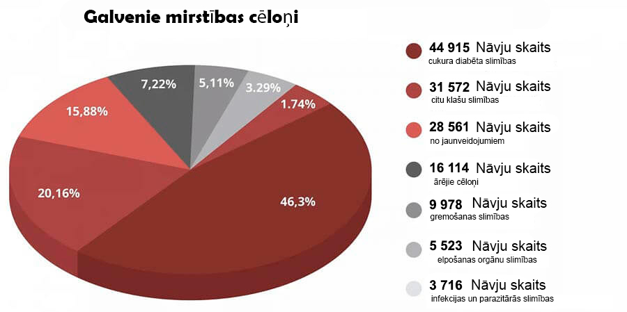

AIZLIEGTAIS ATKLĀJUMS: 7 nedēļās Mākslīgie sarkanie asins ķermenīši atbrīvo no diabēta, mazina cukura līmeni un neticami paaugstina imunitāti!

Kārtējās pārraides filmēšanas laikā notika mulsums, kas apkaunoja medicīnas "spīdekļus". Viens no uzaicinātajiem ekspertiem pēkšņi sāka runāt ne pēc scenārija. Ar savu paziņojumu viņš apstulbināja skatītājus studijā. Bet īpaši tika medicīnas ierēdņiem.
Kardioķirurgs atklāti paziņoja: Jūs piemēslojat ēteru ar informāciju par vīrusu, bet aizvērt acis uz problēmu, no kuras katru gadu cieš vairāk nekā 1,3 miljoni cilvēku! Kāpēc neviens nerunā par endokrīnajām slimībām? Kāpēc jūs visi klusējat, ka jau pastāv līdzeklis, kas atbrīvo no diabēta?»
Cukura diabēts! Lūk, kas ir galvenais cilvēku slepkava. Kā jūs visi darāt izliekaties, kā tā arī jābūt. Neievērojat labākos līdzekļus, kuri risina šo problēmu.
Diabēts tiek uzskatīts par vienu no bīstamākajām slimībām. Atšķirībā no daudzām citām slimībām, kas rodas cilvēkam, tas ved nevis pie kaut kādām pagaidu problēmām ar veselību, bet attīstās augoši pakāpeniski novedot cilvēku kapā. Cukura diabēts ir miljonu mokošu nāvju cēlonis. Tas ir kā bumba ar laika degli, kas ne vienmēr nostrādās uzreiz, bet ar 100% varbūtību agri vai vēlu uzsprāgs. Turklāt situācija ir tāda, ka nav nekādu simptomu, kas norādītu uz nāvējošu komplikāciju rašanos, vienkārši neeksistē. Šodien cilvēks ir vesels, bet jau rīt viņš nejūt roku, viņam sāk trūdēt kājas vai attīstās vēža audzējs galvā. Bet jūs piemēslojat galvas un ievadāt neticamus pasākumus gandrīz bezsimptomu slimības dēļ, kas turklāt radusies ne tagad, un diez vai kaut kur pazudīs.
Cilvēki mirst ne no vīrusa, bet no cukura diabēta un tā izraisītajām komplikācijām! Iegaumējiet to vienreiz un uz visiem laikiem! — apgalvoja Katrīna Alksne, viena no uzaicinātajiem ekspertiem, bet citi dalībnieki burtiski uzbruka viņai, mēģinot aizvērt viņai muti.
Statistika ir šokējoša! Epidēmija, kas paņēmusi 15 tūkstošus dzīvību, bet no cukura diabēta šajā pašā laikā ir mirusi gandrīz 50 000 cilvēku.
Bet pats smieklīgākais un skumjākais ir tas, ka 75,87% smagu komplikāciju gadījumos no vīrusiem tie ir cilvēki ar cukura diabētu! Nebūtu viņiem ir šī slimība, kas nežēlīgi iznīcina imūnsistēmu, viņi būtu izslimotu bez simptomiem. Un tā ir galvenā riska grupa. Un atkal, par to neviens nerunā, jo uzreiz būs jautājums – ko jūs darāt, lai ārstētu šo viltīgo slimību?
studijā sākās apjukums. Eksperti — Rīgas klīnikas ārsti sāka strīdēties, pārtraucot viens ar otru. Raidījums steidzami tika apturēts un ātri tika palaists reklāmas bloks. Bet Alksnes kundzi apsardze izdzina no studijas.
No ētera šī epizode bija izgriezta. Bet skatītāji studijā iegaumēja šo incidentsu uz ilgu laiku.
Mēs nolēmām veikt savu izmeklēšanu un atradām šo ekspertu.

Katrīna Alksne - augstākās kategorijas ārste, medicīnas zinātņu kandidāte,
profesore, vadošais speciālists,cukura diabēta asinsvadu komplikāciju vadošais speciālists.
Alksnes kundze, par skandālu TV zina, šķiet, visi jūsu kolēģi. Kā jūs neizbijāties tā rīkoties?
– Es nesapratu visus riskus, bet es vienkārši nespēju vairs klusēt. Nevar malt vienu un to pašu un nepiedāvāt konkrētu ārstēšanu. Es esmu ārsts, es deva Hipokrāta zvērestu un sekoju tam.
Esmu priecīga, ka jūs sazinājāties ar mani, tāpēc ka es varu atkārtot savus vārdus arī jūsu lasītājiem. Pandēmija pāries, būs vakcīna, pasaule to pārdzīvos kā arī jebkuru epidēmiju pirms tam. Bet alkatības un pērkamības vīruss paliks ar mums, es baidos, ka uz visiem laikiem. No šī vīrusa vakcīna vēl nav izgudrota.
Par ko tieši jūs runājat?
– Par to, ka pastāv slimības, kuras mūsu medicīnā ir pieņemts ārstēt gadiem. Es strādāju ar endokrīnajām slimībām, nodarbojos ar cilvēku rehabilitāciju, kuri pārcietuši smagas cukura diabēta izraisītas komplikācijas. Un manā jomā krāpšana ir visapkārt.
Esmu pārliecināta, ka arī balsta-kustību aparāta, gremošanas trakta, uz vispār jebkādas slimības var ārstēt pēc simptomiem, atvieglojot stāvokli, bet neatgriežot pilnīgu veselību.
Un iemesls tam ir farmaceitikas korporācijas un to medicīnas pārstāvji, kas uzpērk ārstus visā valstī. Un tagad, kad no katra gludekļa biedē cilvēkus - uzņēmumiem tā vispār ir uzdzīve. Var pārdot testus, sanitaizerus, zāles katram simptomam atsevišķi. Un nāves gadījumā visu novelt uz epidēmiju. Es redzu to visu un man kļūst pretīgi.

Cukura diabētu pie mums neārstē
– Tas ir, jūs gribat teikt, ka visas modernās zāles pret diabētu nav efektīvas?
Zāles pret diabētu, ko oficiāli izraksta cilvēkiem, izpilda vienu svarīgu funkciju – izsūc naudu no slimnieku kabatām uz medicīnas oligarhu kabatām.
Tas ir likumīgas narkotikas. Spriediet paši. Slimnieks izdzer tableti, viņa stāvoklis uzlabojas. Preparāta darbība tiek pārtraukta un cukura līmenis atkal pieaug. Tā darbojas visas narkotikas. Lai justos labi, vajag meklēt jaunu "devu".
Galvenais ir saprast lūk ko: ārkārtas situācijās "ķīmiskie" preparāti ir vajadzīgi un svarīgi. Viņi glābj cilvēku dzīvības, kad ir nepieciešama steidzama palīdzība. Pirmā pasaules kara laikā, piemēram, kaujas laukā lietoja heroīnu, lai ievainotie nemirtu no sāpju šoka.
Bet, ja pastāvīgi dzert tabletes, tad tās iznīcina organismu. Tieši tāpat kā heroīns. Ne tik ātri, bet darbības princips ir tāds pats. Bet lai atbrīvotos no blakusparādībām, jums pārdos vēl tabletes. Un vēl. Un vēl. Jo vairāk, jo labāk aptiekām un farmakoloģijas biznesam.
– Bet tā taču cilvēki dzīvo gadiem ilgi uz zālēm
– Narkomāni arī var dzīvot diezgan ilgi. Bet kas tā ir par dzīvi?
Kad lēkā spiediens. Ja neveci veči, kam ir nedaudz pāri 50, nopelna prostatīts un zaudē potenci. Kad parādās hronisks nogurums, aptaukošanās, sāk tūkt kājas, tā ka staigāt var ar grūtībām, kļūst nejutīgi pirksti. Tad parādās kuņģa-zarnu trakta traucējumi, nierakmeņi intensīvas sāļu un cukura izvadīšanas dēļ.
Dažas tabletes, ilgstoši lietojot vispār ir onkogēnas. Paskatieties uz vēža slimību statistiku – lūk, tā ir īsta epidēmija.
Es jau nerunāju par tādiem sīkumiem kā miega traucējumi, troksnis ausīs, redzes zudums. Uzskaitīt var ilgi. Un iemesls ir viens – paaugstināts glikozes līmenis asinīs, kā rezultātā –diabēts, kuru neviens neārstē. Lai gan līdzeklis jau ir, un tas rāda lieliskus rezultātus.
Līdzeklis no diabēta, kura nebūs aptiekās
– Pārraides filmēšanas laikā jūs mēģinājāt pastāstīt par jauno līdzekli cukura diabēta ārstēšanai, bet jums burtiski izdzina no studijas. Kas tas ir par līdzekli? Kāpēc aptieku pārstāvji reaģē uz tā nosaukumu, gluži kā vampīri uz saules gaismu?
– Es sāku runāt par biopreparātu . Tas ir unikāls līdzeklis uz dzīvu augu vitamolekulu pamata.
- tā ir molekulārās bioloģijas centra izstrāde. To vēl bieži sauc par "Mākslīgiajiem sarkanajiem asins ķermenīšiem". Jo, stimulē jaunu sarkano asins šūnu ražošanu, kas pastiprina glikozes sadalīšanās reakciju vairāk nekā 7 reizes! Kas arī izraisa cukura līmeņa normalizēšanos asinīs.
normalizē šūnu iekšējo glikozes apmaiņu uz vairākiem gadiem. Tas nav jālieto pastāvīgi. Tikai 7 nedēļas tas atbrīvo no diabēta un glikozes līmenis asinīs būs 4.5 mmol/l nākamo 5 gadu laikā.
Par izstrādāšanu mūsu zinātnieku kolektīvs ir saņēmis starptautisko terapeitiskās bioloģijas prēmiju. Par inovatīvu izrāvienu cukura diabēta ārstēšanā.
Šķiet, pēc šādas atzīšanās aptiekām būtu rindā jāstāv aiz tiesībām pārdot . Valstij ir jāņem vērā šis preparāts. Bet nē. Pilnīgs, kapa klusums. Neviens, šķiet, nav pamanījis atklājumu.
Un medicīnas biznesa pārstāvji vispār naidīgi attiecas pret preparātu. Viņiem ir simtiem zāļu nosaukumu, pārdošanas un ieņēmumu plāni. Bet ar vienu līdzekli šie plāni nav izpildāmi. Cilvēki pēc 7 nedēļu ārstēšanas ar aizmirst ceļu uz aptieku.
Tāpēc tāds naids pret . Nomelnot to neizdodas. Tomēr ir starptautiska atzinība, sertifikāti, zinātniskie raksti, tūkstošiem apmierināti pacienti. Tāpēc tika izvēlēta boikota stratēģija. Izlikties, ka tāda preparāta nav. Un, kad es sāku par to runāt ēterā, tas izraisīja nepiesegtu agresiju uz manu pusi.
Organisma pašizdziedināšanās uzsākšana
– No kā palīdz ?
Galvenais mērķis - atjaunot aizkuņģa dziedzera funkciju par 100%. Tas ir pamats, uz kura stāv jūsu veselība.
atjauno asinsvadus 3 posmos:
- Atjauno insulīna receptorus cilvēka ķermeņa audos, tādējādi normalizējot insulīna ražošanu organismā
- Pazemina cukura līmeni asinīs pēc pirmajām lietošanas dienām
- Atjauno "sarežģītā kālija" līmeni un vienlaicīgi ģenerē īpašas imūnās šūnas, kas iedarbina aizkuņģa dziedzera reģenerācijas procesu
aktivizē reģenerācijas procesu un atjaunina visus organisma audus, no iekšējiem orgāniem līdz asinsvadiem. Tas ļauj atbrīvoties no visiem bojājumiem, kurus paspējis iegūt organisms slimības laikā.
Šis pašatjaunošanās process saucas par autoreģenerāciju . Šos mehānismus ir ielikusi pati daba, bet ir katalizators, atslēga, kas "palaiž" autoreģenerāciju.
Atbrīvojieties no 7 slimībām 7 nedēļās
– Ko jūs saņemsiet pēc ārstēšanas kursa ar ?
1. Normalizē glikozes līmeni
Preparātam ir ļoti noderīgs efekts, proti, samazina insulīna rezistenci. Tā ir ļoti ievērojama īpašība. Preparāta bioloģiski aktīvie komponenti iekļūst tieši muskuļu, tauku un aknu šūnās un stimulē tās tā, ka tie sāk labāk reaģēt uz hormona klātbūtni asinīs. Medicīnā šo procesu sauc par sekundāro šūnu veidošanos. Kā rezultātā, laika gaitā šūnas sāk patērēt aktīvāku glikozi, kā rezultātā samazinās tās koncentrācija asinīs. Organismam tas ir drošākais glikozes uzņemšanas veids.
2. Asinsvadu atjaunošana
Galvenā iedarbība ir tā, ka tas ne tikai likvidē cukuru no asinīm, bet normalizē glikozes līmeni. Viņš arī izšķīdina cukuru, kas jau ir iekļuvis caur asinsvadu sieniņām. Viņi, it kā atbrīvojies no ledus, atkal iegūst sašaurināšanās un izplešanās iespēju. Izšķīdina trombus, attīra asinsvadus. Notiek sīko kapilāru atjaunošana. Rezultātā cilvēkam nepaaugstinās arteriālais spiediens, izzūd vājums un miegainība, uzlabojas brūču un griezumu dzīšana.
3. Ādas, kaulu un muskuļu stāvokļa uzlabošanās
Atjaunojas pat stipri bojāta āda. Čūlas sadzīst, āda pārstāj strutot un žūst. Tas pats arī ar kauliem, atjaunojas to veselīgs sastāvs, tie pārstāj būt trausli. Atjaunošana notiek visos audos, muskuļi kļūst elastīgāki.
4. Redzes asuma uzlabošanās
Pat stipri bojāta redzi pakāpeniski sāk atjaunoties.
- Uzlabojas redzes asums no 0.5 līdz 2.1
- Normalizējas acu spiediens
- Samazinās kataraktas simptomi.
5. Atbrīvo no liekā svara
Liekais svars - tas ir tas, kas 4-5 reizes pasliktina slimā ar cukura diabētu pacienta stāvokli. Tāpēc, viena no iedarbībām ir notievēšana. Tas notiek divu iemeslu dēļ. Pirmkārt, šūnas sāk aktīvāk pārstrādāt cukuru enerģijā. Un otrkārt, komplekss satur spēcīgu, koncentrētu Heliаnthus tuberоsus ekstraktu, kas ir spēcīgs dabīgs tauku dedzinātājs.
6. Potences normalizēšana
Daudzi diabētiķi ir bezspēcīgi. Viena no apbrīnojamām iedarbībām ir testosterona līmeņa normalizēšana un veselīgas potences atjaunošana. Pat cienījamā vecumā virs 70 gadiem vīrieši ar izbrīnu pamana, ka vīrieša spēks pie viņiem ir atgriezies.
7. Sāk darboties imunitāte
Uzlabojas kaulu smadzeņu asins apgāde, kas nodarbojas ar imūno šūnu ražošanu. Tas izraisa organisma aizsargspēju pastiprināšanos.
Imunitāte aizstāv ne tikai no vīrusiem. Galvenā spēcīgas imunitātes funkcija ir aizsardzība no vēža šūnām. Spēcīga imunitāte laikus atpazīst un iznīcina vēža šūnas. Nedod parādīties pilnvērtīgā audzējā.
Imunitāte, kas strādā vismaz uz 50%, jau ir nepārvarams šķērslis vīrusiem. Un tas arī šodien ir ļoti svarīgi.
Aptiekāru savienības priekšsēdētājs nometa klausuli, izdzirdot par

Reinis Indrāns. Baltijas valstu aptieku tīklu savienības priekšsēdētājs.
Mēs piezvanījām galvenajam aptiekāram un vēlējās uzzināt, kāpēc nevienā aptiekā nav preparāta .
– Indrāna kungs, labdien! Sakiet, lūdzu, kāpēc aptiekas ignorē preparātu ? Jūs esat dzirdējuši par to?
– Kāpēc jūs nodarbojaties ar provokācijām!? Es netaisos atbildēt uz tādiem jautājumiem!!! Tā vispār nav jūsu darīšana!
– Signāli...
Kā saņemt
Pēc tādas sarunas ar valsts galveno aptiekāru kļuva skaidrs, ka aptiekās preparāta nav un nebūs. Taču saņemt to tomēr var, jā?
– Jā, visi valsts pilsoņi var pasūtīt caur internetu tieši no rūpnīcas.
– Kāpēc pasūtīt var tikai caur internetu?
Tas ir izdarīts trīs iemeslu dēļ:
- Kvalitātes garantija. nosūta tieši no rūpnīcas pircējam
- Aizsardzība pret starpniekiem. Lai neviens nevarētu uzskrūvēt 1-2-3 simtus uz tālākpārdošanas
- Ātra piegāde ar pastu
Reģionālā atlaide pensionāriem
Visos tagad darbojas sociālā atbalsta fonda problēma. Šajā programmā var pasūtīt ar atlaidi. Tas darīts saskaņā ar cukura diabēta profilakses atvieglojumu programmu.
Atlaide vispirms tiek dota personām, kas ir vecāki par 47 gadiem, kas dzīvo reģionos ar paaugstinātu epidemioloģisko situāciju.
Tāpēc es stingri iesaku: netērējiet laiku! Otras tādas iespējas nebūs. Nav zināms, cik ilgs programma, un cik ilgam laikam pietiks krājumu.
Saņemiet tieši tagad!
Lai saņemtu pēc atvieglojumu programmas, jums nepieciešams tikai mobilais tālrunis.
Norādiet savu numuru pieteikuma veidlapā un noklikšķiniet uz pogas "Saņemt ".
Svarīgi! Tikai 1 pieteikums uz 1 telefona numuru!
Tagad pieteikumus pieņem un apstrādā visu diennakti . Bet sakarā ar lielo noslogojumu, iespējams, būs mazliet jāpagaida.
Uzmanību!
Pārliecinieties , ka vietnē ir drošības hologramma:
Drošības hologramma ir 100% kvalitātes garantija. Tā norāda, ka jūs atrodaties oficiālajā mājas lapā un jums tiks nosūtīts īsts un sniegta nepieciešamā konsultācija un atbalsts.
Komentāri